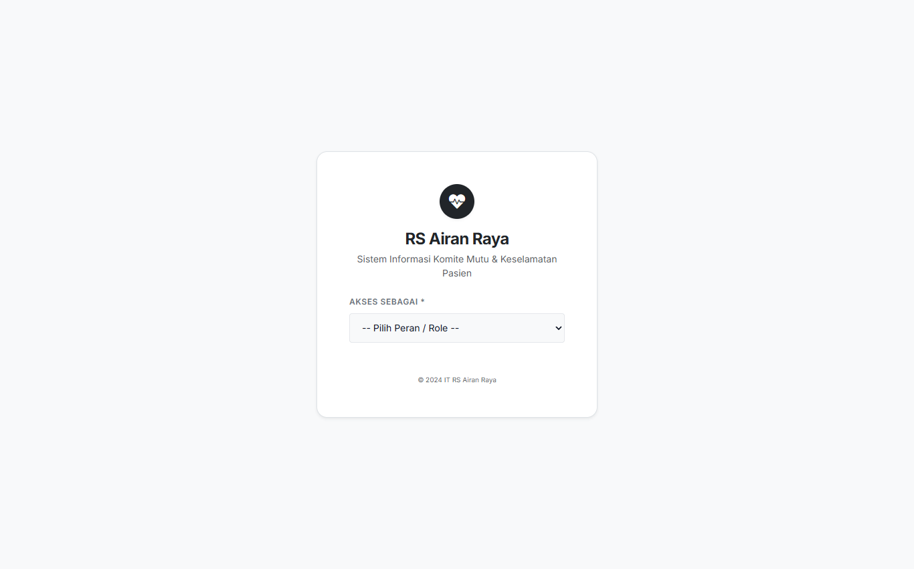
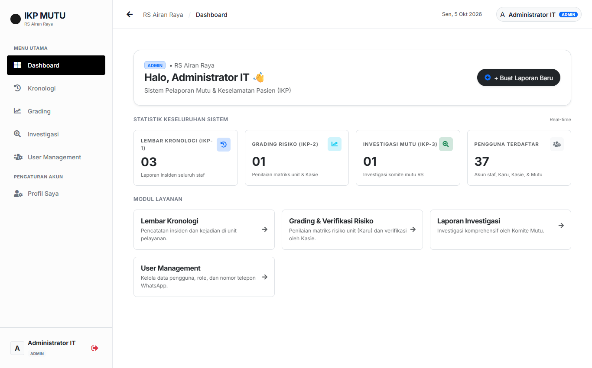
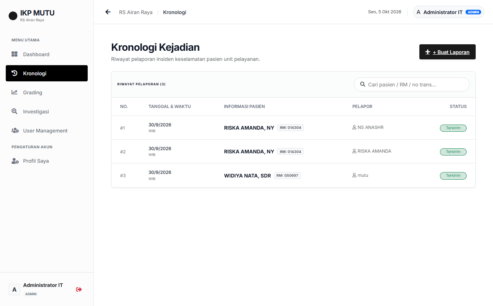
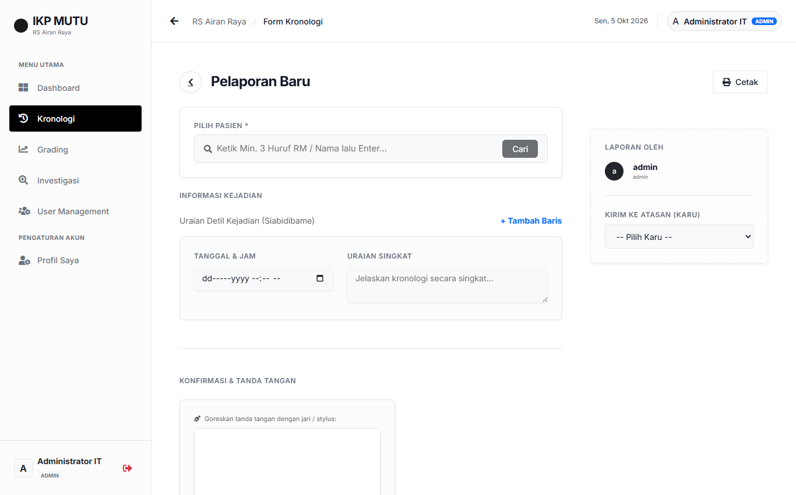
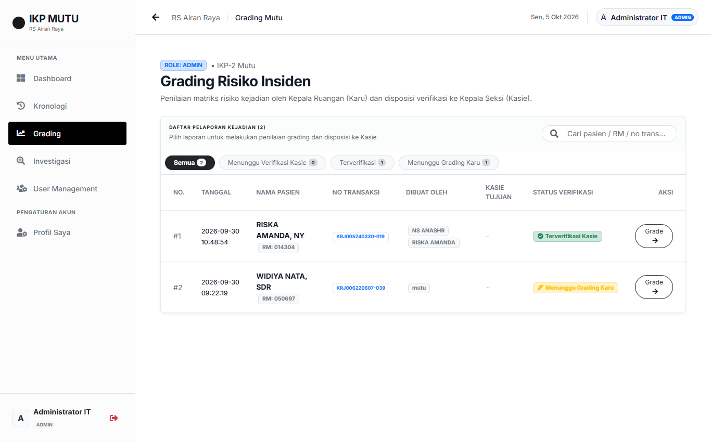
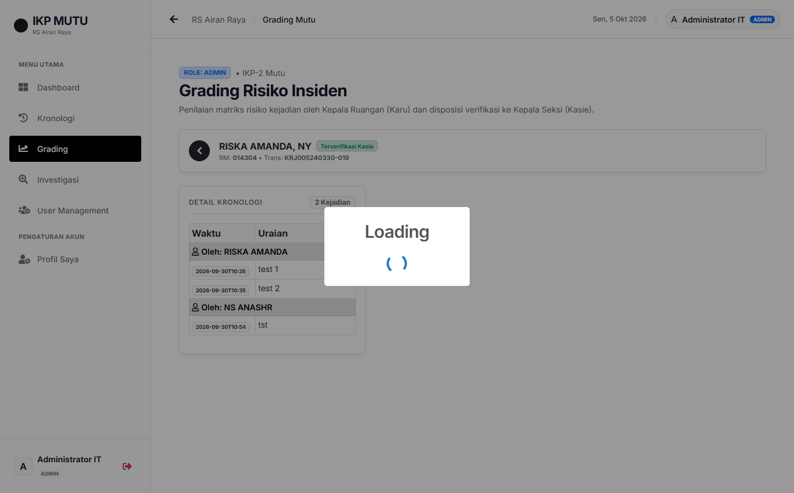
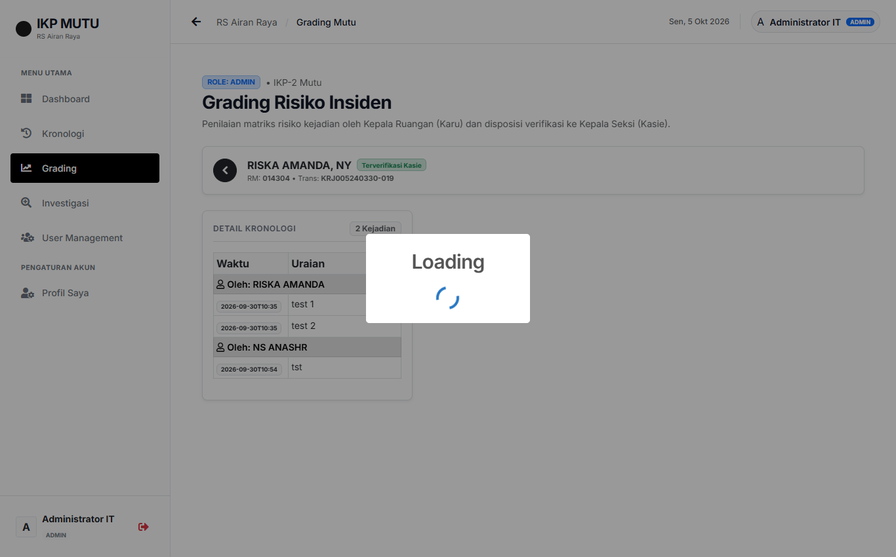
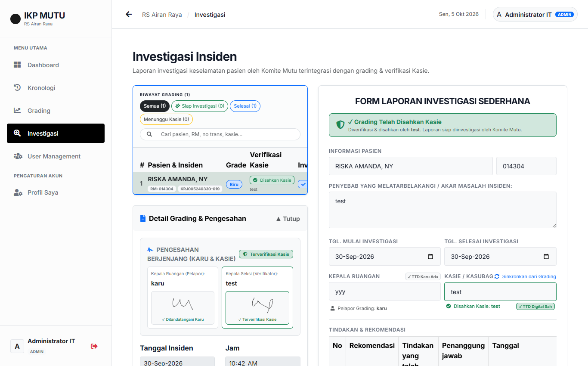
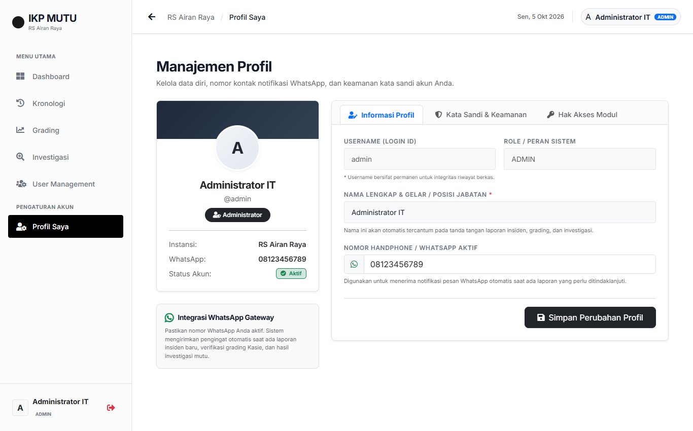

Panduan Pengguna Aplikasi IKP & Mutu
Buku petunjuk operasional terpadu bagi seluruh staf pelapor, Kepala Ruangan (Karu), Kepala Seksi (Kasie), dan Komite Mutu RS Airan Raya Lampung Selatan.
1. Pendahuluan & Alur Kerja Terintegrasi
Memahami mekanisme kerja paperless dan alur disposisi pelaporan insiden
Sistem Pelaporan Insiden Keselamatan Pasien (IKP) dan Mutu RS Airan Raya dibangun untuk menggantikan proses pelaporan kertas tradisional menjadi digital yang cepat, transparan, dan akuntabel. Aplikasi ini dilengkapi dengan integrasi nomor rekam medis SIMRS, tanda tangan digital (e-signature), dan notifikasi otomatis WhatsApp di setiap tahapan verifikasi.
Alur Kerja Berjenjang 4 Tahap (End-to-End Workflow)
Staf / Perawat (IKP-1)
Mencatat kronologi kejadian runut waktu, menarik data pasien dari SIMRS, membubuhkan tanda tangan digital, dan mengirimkan laporan ke Karu.
Kepala Ruangan (IKP-2)
Menerima notifikasi WhatsApp, melengkapi rincian insiden, menentukan penilaian matriks risiko (Biru/Hijau/Kuning/Merah), TTD Karu, dan meneruskan ke Kasie.
Kepala Seksi (Kasie)
Menerima notifikasi WhatsApp, mereview keabsahan kronologi & ketepatan grading risiko unit, lalu membubuhkan tanda tangan pengesahan verifikasi.
Komite Mutu (IKP-3)
Menerima notifikasi setelah disahkan Kasie, menganalisis akar masalah (root cause), menyusun rencana tindakan & rekomendasi perbaikan mutu RS.
2. Panduan Masuk Sistem (Login)
Langkah autentikasi akun berdasarkan peran pengguna
Untuk mengakses aplikasi, buka browser pada komputer ruangan atau handphone Anda lalu buka alamat URL aplikasi IKP Mutu.

Petunjuk Login Berdasarkan Peran Pengguna:
| Peran Pengguna | Metode Masuk | Kredensial yang Digunakan |
|---|---|---|
| Tenaga Perawat | Pilih Akses Sebagai: Tenaga Perawat. Ketik min. 3 huruf nama Anda di kotak Username, klik nama yang cocok pada dropdown. | Password SIMRS / Kepegawaian Anda. |
| Kepala Ruangan (Karu) | Pilih Akses Sebagai: Kepala Ruangan (Karu). Ketik username akun Karu yang terdaftar. | Password akun Karu. |
| Kepala Seksi (Kasie) | Pilih Akses Sebagai: Kepala Seksi (Kasie). Ketik username akun Kasie yang terdaftar. | Password akun Kasie. |
| Tim Mutu | Pilih Akses Sebagai: Tim Mutu. Ketik username akun Komite Mutu. | Password akun Mutu. |
| Karyawan Lainnya | Pilih Karyawan Lainnya. Ketik nama untuk mencari data NIK, lalu masukkan Email dinas Anda. | Email & NIK Pegawai. |
3. Dashboard Pemantauan Real-time
Pusat kendali dan ringkasan statistik yang disesuaikan dengan peran Anda
Setelah berhasil login, Anda akan disambut dengan halaman Dashboard utama. Dashboard menyajikan kartu-kartu metrik yang berubah secara dinamis sesuai peran Anda (misal: Kasie melihat laporan yang perlu verifikasi, Karu melihat laporan unitnya, dan Perawat melihat laporan pribadi).

Fitur Utama Dashboard:
- Banner Selamat Datang: Menampilkan nama pengguna, badge jabatan/role, dan tombol cepat
+ Buat Laporan Baru. - Kartu Statistik Peran:
- Kasie: Jumlah Perlu Verifikasi Kasie (dengan lencana merah bila ada antrean tugas), Sudah Diverifikasi, dan Total Laporan Seksi.
- Karu: Jumlah Laporan Masuk (Unit), Menunggu Grading Karu, dan Menunggu Verifikasi Kasie.
- Perawat: Jumlah Total Laporan Saya, Terkirim ke Karu, dan Draf Belum Terkirim.
- Pintasan Modul Layanan: Akses langsung ke Lembar Kronologi, Penilaian Grading Risiko, Investigasi Mutu, dan Pengaturan Pengguna.
4. Modul Staf / Perawat (Form IKP-1 Kronologi Insiden)
Panduan pengisian kronologi kejadian oleh staf pelapor pertama
Modul ini digunakan oleh perawat atau tenaga kesehatan untuk mencatat kronologi peristiwa keselamatan pasien secara runtut waktu dan objektif.
A. Melihat Daftar Riwayat Laporan
Buka menu Kronologi untuk melihat daftar seluruh pelaporan insiden yang pernah Anda buat:

B. Membuat Laporan Kronologi Baru (IKP-1)
Klik tombol + Buat Laporan. Formulir pelaporan akan terbuka:

Langkah demi Langkah Pengisian IKP-1:
- Pilih Pasien: Ketik minimal 3 karakter No RM atau Nama Pasien pada kotak pencarian lalu klik Cari atau tekan Enter. Pilih pasien dari daftar hasil pencarian.
- Informasi Kejadian: Masukkan Tanggal & Jam waktu kejadian berlangsung, lalu ketik Uraian Singkat kejadian. Jika kronologi bertahap, klik + Tambah Baris untuk menambah urutan waktu berikutnya.
- Tanda Tangan Digital Pelapor: Goreskan tanda tangan Anda pada kotak kanvas tanda tangan menggunakan mouse atau layar sentuh HP.
- Pilih Karu & Kirim: Pada panel kanan, pilih nama Kepala Ruangan Anda dari daftar Kirim ke Atasan (Karu), lalu klik tombol biru Kirim Laporan ke Karu.
5. Modul Kepala Ruangan (Form IKP-2 Grading Risiko)
Penilaian matriks risiko unit, pengisian rincian insiden, dan disposisi ke Kasie
Kepala Ruangan (Karu) bertindak sebagai pemeriksa pertama yang mengevaluasi kejadian di unitnya, menentukan tingkat keparahan risiko, dan meneruskan laporan ke Kepala Seksi terkait.
A. Membuka Daftar Grading
Saat staf mengirim laporan, Karu menerima notifikasi WhatsApp. Buka menu Grading untuk melihat daftar laporan yang masuk:

B. Mengisi Rincian Insiden & Penilaian Risiko (Tab II. RINCIAN)
Klik tombol Grade pada baris pasien. Anda dapat meninjau uraian kronologi perawat di panel sebelah kiri, kemudian buka tab II. RINCIAN pada form sebelah kanan:

Poin Evaluasi yang Wajib Diisi Karu:
- Jenis Insiden: KNC (Nyaris Cedera), KTD (Tidak Diharapkan), atau SENTINEL.
- Akibat Insiden: Kematian, Cedera Irreversibel (Berat), Cedera Reversibel (Sedang), atau Cedera Ringan.
- Tindakan Segera: Tindakan awal yang langsung dilakukan petugas beserta hasilnya.
- Grading Risiko Kejadian: [BIRU - Rendah], [HIJAU - Sedang], [KUNING - Tinggi], atau [MERAH - Ekstrim].
6. Modul Kepala Seksi (Verifikasi & Pengesahan Kasie)
Tanda tangan pengesahan dan penerusan otomatis ke Komite Mutu RS
Kepala Seksi (Kasie) bertindak sebagai pejabat struktural yang memvalidasi keabsahan penilaian risiko Kepala Ruangan. Kasie hanya melihat laporan yang dialamatkan ke unit seksi yang dipimpinnya.

Tata Cara Verifikasi oleh Kasie:
- Kasie menerima notifikasi WhatsApp saat Karu menyelesaikan grading.
- Login dengan akun Kasie, buka menu Grading, pilih tab Menunggu Verifikasi Kasie.
- Klik tombol Verifikasi TTD pada laporan pasien bersangkutan.
- Tinjau rincian kejadian dan ketepatan grading risiko Karu.
- Buka tab TTD & VERIFIKASI. Goreskan tanda tangan digital Kasie pada kolom verifikasi.
- Klik Simpan / Verifikasi. Status laporan berubah menjadi TERVERIFIKASI dan notifikasi WhatsApp otomatis diteruskan ke tim Komite Mutu.
7. Modul Komite Mutu (Form IKP-3 Investigasi Sederhana)
Investigasi akar masalah dan penetapan rekomendasi perbaikan mutu keselamatan
Komite Mutu Rumah Sakit bertanggung jawab melakukan investigasi sederhana atau Root Cause Analysis (RCA) terhadap laporan insiden yang telah disahkan oleh Kasie.

Langkah Investigasi Mutu:
- Banner Status Kasie: Komite Mutu dapat memastikan bahwa laporan telah memiliki tanda tangan sah Kasie sebelum memulai investigasi.
- Tombol Sinkronkan dari Grading: Klik tombol ini agar nama Kasie dan Karu yang bertanggung jawab otomatis tersinkronisasi.
- Akar Masalah (Root Cause): Masukkan faktor penyebab yang mendasari terjadinya insiden.
- Tabel Rekomendasi & Tindakan: Tambahkan poin rekomendasi pencegahan, tindakan konkret yang diambil, Penanggung Jawab (PJ), dan tanggal batas penyelesaian.
- Klik Simpan Laporan Investigasi dan selesaikan dengan tombol Verifikasi Kronologi Ini.
8. Pengaturan Profil & Nomor WhatsApp
Memastikan nomor handphone aktif agar pemberitahuan notifikasi otomatis terkirim
Notifikasi sistem terhubung langsung ke server WhatsApp. Sangat penting bagi seluruh Karu, Kasie, dan Tim Mutu untuk mendaftarkan nomor WhatsApp aktif mereka di menu profil masing-masing.

Cara Mendaftarkan Nomor WhatsApp:
- Klik nama Anda di pojok kanan atas layar lalu pilih Profile.
- Pada tab Informasi Akun, masukkan nama lengkap beserta gelar.
- Pada kolom Nomor WhatsApp, masukkan nomor HP Anda (format:
08xxxxxxxxxx). - Klik tombol Simpan Perubahan Profil.
9. Panduan Cetak Dokumen Resmi Rumah Sakit
Mencetak formulir IKP-1, IKP-2, dan IKP-3 berstandar akreditasi rumah sakit
Aplikasi telah dirancang agar hasil cetak otomatis menampilkan Kop Surat Resmi RS Airan Raya, stempel form, tabel data pasien, dan tanda tangan digital yang telah dibubuhkan.
| Jenis Formulir | Peruntukan | Cara Cetak |
|---|---|---|
| Form IKP-1 | Laporan Kronologi Insiden Staf / Perawat | Buka laporan di menu Kronologi, klik tombol Cetak di pojok kanan atas formulir. |
| Form IKP-2 | Laporan Grading Risiko Kejadian Unit | Buka laporan di menu Grading, klik tombol Cetak Form di sebelah kanan atas. |
| Form IKP-3 | Laporan Investigasi Sederhana Mutu | Buka laporan di menu Investigasi, klik tombol Cetak pada halaman investigasi. |
10. Tanya Jawab & Solusi Kendala (FAQ & Troubleshooting)
Panduan penyelesaian kendala operasional yang sering ditanyakan
Q1: Pasien tidak muncul saat diketik di kolom pencarian?
Solusi: Pastikan Anda mengetik minimal 3 karakter (contoh: 4 digit nomor RM atau 3 huruf nama pasien). Tekan tombol Cari atau tekan tombol Enter pada keyboard.
Q2: Mengapa saya tidak menerima notifikasi WhatsApp saat ada laporan masuk?
Solusi: Masuk ke menu Profile akun Anda. Pastikan kolom Nomor WhatsApp sudah terisi nomor aktif Anda dengan benar, lalu klik Simpan.
Q3: Tanda tangan digital salah gores, bagaimana cara menghapusnya?
Solusi: Klik tombol Hapus / Bersihkan di bawah kanvas tanda tangan, lalu goreskan kembali tanda tangan Anda yang benar sebelum menekan tombol simpan.
Q4: Apakah laporan yang sudah terkirim bisa diedit kembali oleh perawat?
Solusi: Laporan yang telah berstatus Terkirim akan dikunci demi menjaga integritas data medikolegal. Bila terdapat ralat informasi, sampaikan kepada Kepala Ruangan (Karu) agar dimasukkan dalam rincian investigasi unit.
Q5: Kepala Seksi (Kasie) tidak menemukan laporan di daftarnya?
Solusi: Hal ini terjadi apabila Karu belum memilih nama Kasie tujuan saat melakukan grading. Karu perlu membuka kembali menu Grading, memilih nama Kasie bersangkutan pada tab TTD & Verifikasi, lalu menyimpan perubahan.